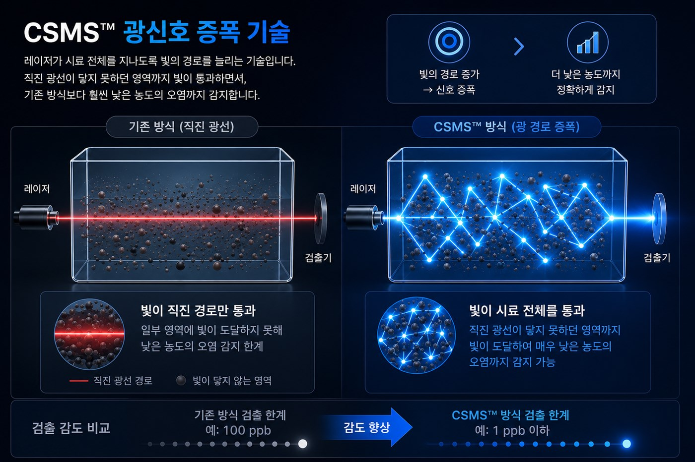
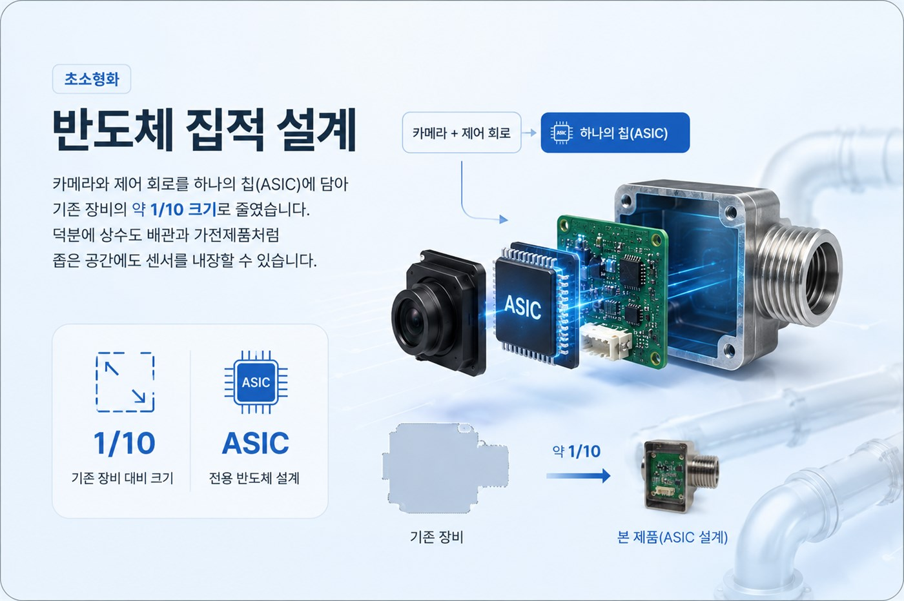

CORE TECHNOLOGY
빛으로 측정하고,
AI로 해석합니다
신호를 키우고, 데이터를 학습하고, 장비를 작게 만들었습니다. 세 가지 기술이 더웨이브톡 측정의 기반이 됩니다.
01 WHY
기존 수질 검사의
네 가지 한계
물속의 오염과 미생물은 눈에 보이지 않습니다. 그러나 기존 방식은 결과가 늦고, 장비는 크고 비쌉니다. 더웨이브톡은 이 문제들을 측정 방식부터 다시 설계했습니다.
- 01
검사에 며칠이 걸립니다
미생물 배양 검사는 결과가 나올 때까지 수일이 필요합니다. 오염을 확인했을 때는 이미 늦습니다.
- 02
장비가 크고 비쌉니다
기존 측정 장비는 부피가 커서 현장 곳곳에 상시 설치하기 어렵습니다.
- 03
미세한 오염을 놓칩니다
기존 광학 방식은 농도가 낮은 오염을 감지하지 못해 관리의 사각지대가 생깁니다.
- 04
관리가 번거롭습니다
센서 오염과 광량 변화로 측정값이 흔들려 주기적인 보정이 필요합니다.

CSMS™ 광신호 증폭 기술
레이저가 시료 전체를 지나도록 빛의 경로를 늘리는 기술입니다. 직진 광선이 닿지 못하던 영역까지 빛이 통과하면서, 기존 방식보다 훨씬 낮은 농도의 오염까지 감지합니다.
AI 패턴 분석
빛의 간섭 패턴 변화를 학습한 AI가 100 CFU/mL 미만의 미생물까지 실시간으로 구분합니다. 센서 오염이나 광량 변화에도 측정값이 안정적으로 유지됩니다.

반도체 집적 설계
카메라와 제어 회로를 하나의 칩(ASIC)에 담아 기존 장비의 약 1/10 크기로 줄였습니다. 덕분에 상수도 배관과 가전제품처럼 좁은 공간에도 센서를 내장할 수 있습니다.
측정 과정
- 01
시료 채취
물 한 방울로 측정합니다.
- 02
레이저 측정
시료에 레이저를 통과시킵니다.
- 03
신호 증폭
빛의 경로를 늘려 신호를 키웁니다.
- 04
AI 분석
패턴을 분석해 오염을 판별합니다.
- 05
결과 확인
측정 결과를 즉시 확인합니다.
기술 도입을 검토하고 계신가요?
적용 환경에 맞는 측정 방식을 함께 설계해 드립니다.